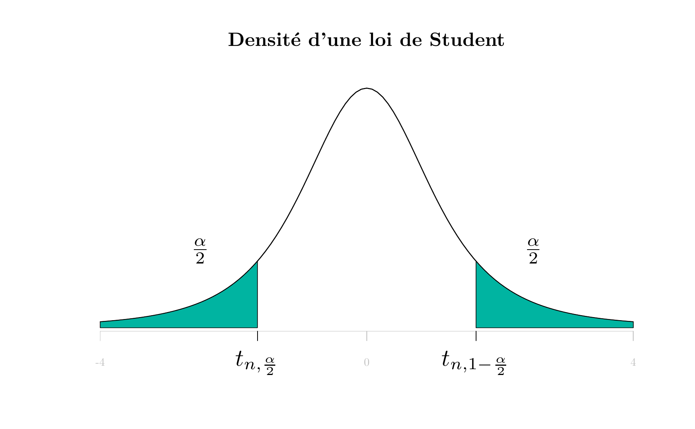

D Table de la loi de Student
Attention pour la description de cette table. Ici on donne directement le quantile \(t_{n,1-\frac{\alpha}{2}}\).
\(X\) étant une variable aléatoire de loi de Student à \(n\) degrés de liberté \(St(n)\) et \(\alpha\) un réel de \([0,1]\), la table donne la valeur de \(t_{n,1-\frac{\alpha}{2}} = F^{-1}(1-\frac{\alpha}{2})\) telle que \(P(|X| > t_{n,1-\frac{\alpha}{2}})=\alpha\). En , la commande correspondante est qt(1-alpha/2, n).
#ans> Error in loadNamespace(x): there is no package called 'shape'
#ans> Error in loadNamespace(x): there is no package called 'shape'
| \(n \backslash \alpha\) | 0.9 | 0.8 | 0.7 | 0.6 | 0.5 | 0.4 | 0.3 | 0.2 | 0.1 | 0.05 | 0.02 | 0.01 | 0.001 |
|---|---|---|---|---|---|---|---|---|---|---|---|---|---|
| 1 | 0.158 | 0.325 | 0.510 | 0.727 | 1.000 | 1.376 | 1.96 | 3.08 | 6.31 | 12.71 | 31.82 | 63.66 | 636.62 |
| 2 | 0.142 | 0.289 | 0.445 | 0.617 | 0.816 | 1.061 | 1.39 | 1.89 | 2.92 | 4.30 | 6.96 | 9.93 | 31.60 |
| 3 | 0.137 | 0.277 | 0.424 | 0.584 | 0.765 | 0.978 | 1.25 | 1.64 | 2.35 | 3.18 | 4.54 | 5.84 | 12.92 |
| 4 | 0.134 | 0.271 | 0.414 | 0.569 | 0.741 | 0.941 | 1.19 | 1.53 | 2.13 | 2.78 | 3.75 | 4.60 | 8.61 |
| 5 | 0.132 | 0.267 | 0.408 | 0.559 | 0.727 | 0.920 | 1.16 | 1.48 | 2.02 | 2.57 | 3.37 | 4.03 | 6.87 |
| 6 | 0.131 | 0.265 | 0.404 | 0.553 | 0.718 | 0.906 | 1.13 | 1.44 | 1.94 | 2.45 | 3.14 | 3.71 | 5.96 |
| 7 | 0.130 | 0.263 | 0.402 | 0.549 | 0.711 | 0.896 | 1.12 | 1.42 | 1.90 | 2.37 | 3.00 | 3.50 | 5.41 |
| 8 | 0.130 | 0.262 | 0.399 | 0.546 | 0.706 | 0.889 | 1.11 | 1.40 | 1.86 | 2.31 | 2.90 | 3.35 | 5.04 |
| 9 | 0.129 | 0.261 | 0.398 | 0.543 | 0.703 | 0.883 | 1.10 | 1.38 | 1.83 | 2.26 | 2.82 | 3.25 | 4.78 |
| 10 | 0.129 | 0.260 | 0.397 | 0.542 | 0.700 | 0.879 | 1.09 | 1.37 | 1.81 | 2.23 | 2.76 | 3.17 | 4.59 |
| 11 | 0.129 | 0.260 | 0.396 | 0.540 | 0.697 | 0.876 | 1.09 | 1.36 | 1.80 | 2.20 | 2.72 | 3.11 | 4.44 |
| 12 | 0.128 | 0.259 | 0.395 | 0.539 | 0.695 | 0.873 | 1.08 | 1.36 | 1.78 | 2.18 | 2.68 | 3.06 | 4.32 |
| 13 | 0.128 | 0.259 | 0.394 | 0.538 | 0.694 | 0.870 | 1.08 | 1.35 | 1.77 | 2.16 | 2.65 | 3.01 | 4.22 |
| 14 | 0.128 | 0.258 | 0.393 | 0.537 | 0.692 | 0.868 | 1.08 | 1.34 | 1.76 | 2.14 | 2.62 | 2.98 | 4.14 |
| 15 | 0.128 | 0.258 | 0.393 | 0.536 | 0.691 | 0.866 | 1.07 | 1.34 | 1.75 | 2.13 | 2.60 | 2.95 | 4.07 |
| 16 | 0.128 | 0.258 | 0.392 | 0.535 | 0.690 | 0.865 | 1.07 | 1.34 | 1.75 | 2.12 | 2.58 | 2.92 | 4.01 |
| 17 | 0.128 | 0.257 | 0.392 | 0.534 | 0.689 | 0.863 | 1.07 | 1.33 | 1.74 | 2.11 | 2.57 | 2.90 | 3.96 |
| 18 | 0.127 | 0.257 | 0.392 | 0.534 | 0.688 | 0.862 | 1.07 | 1.33 | 1.73 | 2.10 | 2.55 | 2.88 | 3.92 |
| 19 | 0.127 | 0.257 | 0.391 | 0.533 | 0.688 | 0.861 | 1.07 | 1.33 | 1.73 | 2.09 | 2.54 | 2.86 | 3.88 |
| 20 | 0.127 | 0.257 | 0.391 | 0.533 | 0.687 | 0.860 | 1.06 | 1.32 | 1.73 | 2.09 | 2.53 | 2.85 | 3.85 |
| 21 | 0.127 | 0.257 | 0.391 | 0.532 | 0.686 | 0.859 | 1.06 | 1.32 | 1.72 | 2.08 | 2.52 | 2.83 | 3.82 |
| 22 | 0.127 | 0.256 | 0.390 | 0.532 | 0.686 | 0.858 | 1.06 | 1.32 | 1.72 | 2.07 | 2.51 | 2.82 | 3.79 |
| 23 | 0.127 | 0.256 | 0.390 | 0.532 | 0.685 | 0.858 | 1.06 | 1.32 | 1.71 | 2.07 | 2.50 | 2.81 | 3.77 |
| 24 | 0.127 | 0.256 | 0.390 | 0.531 | 0.685 | 0.857 | 1.06 | 1.32 | 1.71 | 2.06 | 2.49 | 2.80 | 3.75 |
| 25 | 0.127 | 0.256 | 0.390 | 0.531 | 0.684 | 0.856 | 1.06 | 1.32 | 1.71 | 2.06 | 2.48 | 2.79 | 3.73 |
| 26 | 0.127 | 0.256 | 0.390 | 0.531 | 0.684 | 0.856 | 1.06 | 1.31 | 1.71 | 2.06 | 2.48 | 2.78 | 3.71 |
| 27 | 0.127 | 0.256 | 0.389 | 0.531 | 0.684 | 0.855 | 1.06 | 1.31 | 1.70 | 2.05 | 2.47 | 2.77 | 3.69 |
| 28 | 0.127 | 0.256 | 0.389 | 0.530 | 0.683 | 0.855 | 1.06 | 1.31 | 1.70 | 2.05 | 2.47 | 2.76 | 3.67 |
| 29 | 0.127 | 0.256 | 0.389 | 0.530 | 0.683 | 0.854 | 1.05 | 1.31 | 1.70 | 2.04 | 2.46 | 2.76 | 3.66 |
| 30 | 0.127 | 0.256 | 0.389 | 0.530 | 0.683 | 0.854 | 1.05 | 1.31 | 1.70 | 2.04 | 2.46 | 2.75 | 3.65 |
| 40 | 0.126 | 0.255 | 0.388 | 0.529 | 0.681 | 0.851 | 1.05 | 1.30 | 1.68 | 2.02 | 2.42 | 2.70 | 3.55 |
| 80 | 0.126 | 0.254 | 0.387 | 0.526 | 0.678 | 0.846 | 1.04 | 1.29 | 1.66 | 1.99 | 2.37 | 2.64 | 3.42 |
| 120 | 0.126 | 0.254 | 0.386 | 0.526 | 0.677 | 0.845 | 1.04 | 1.29 | 1.66 | 1.98 | 2.36 | 2.62 | 3.37 |
| \(+\infty\) | 0.126 | 0.253 | 0.385 | 0.524 | 0.674 | 0.842 | 1.04 | 1.28 | 1.64 | 1.96 | 2.33 | 2.58 | 3.29 |